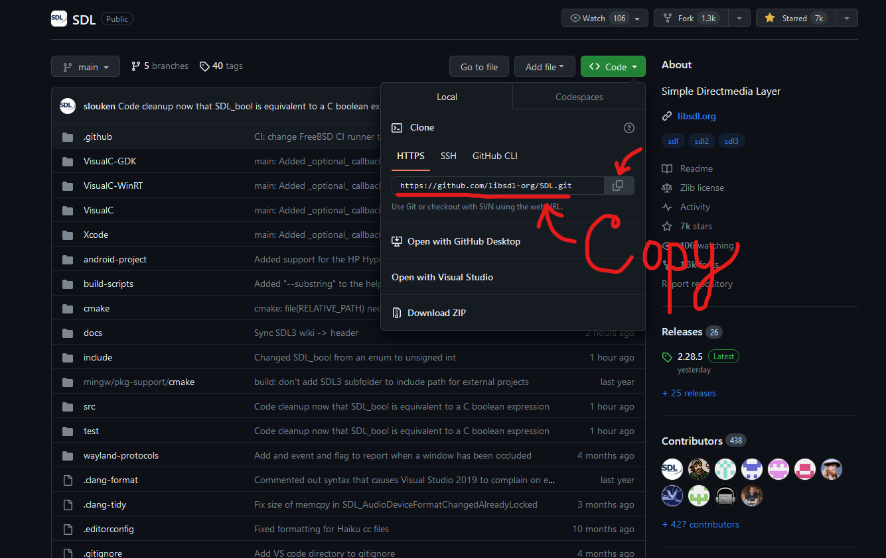
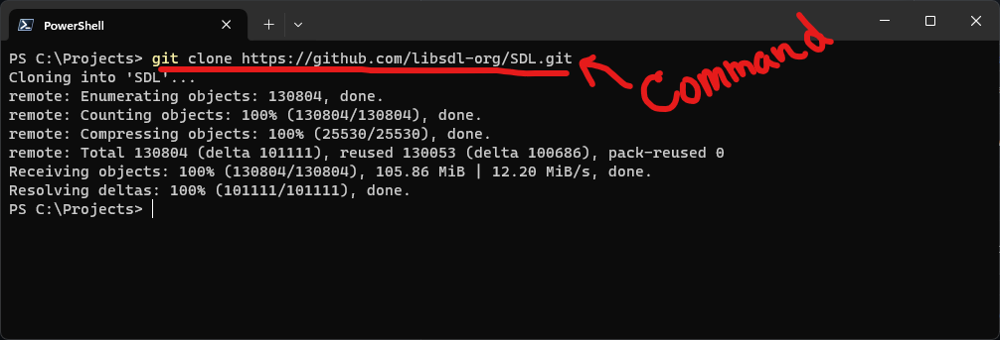
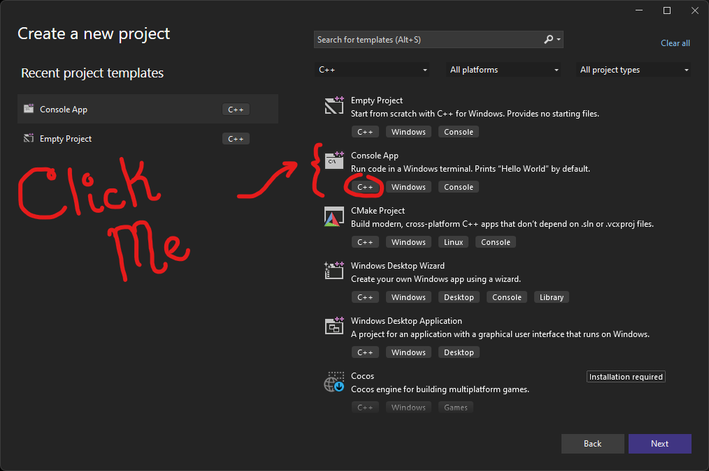
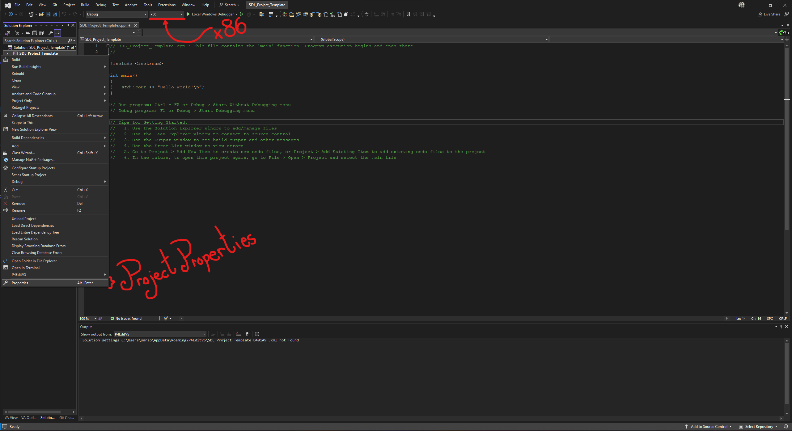
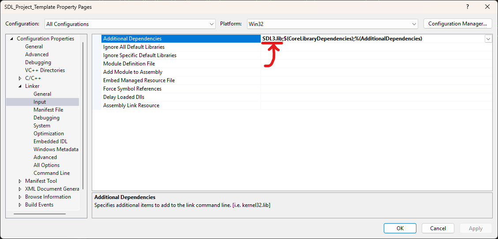
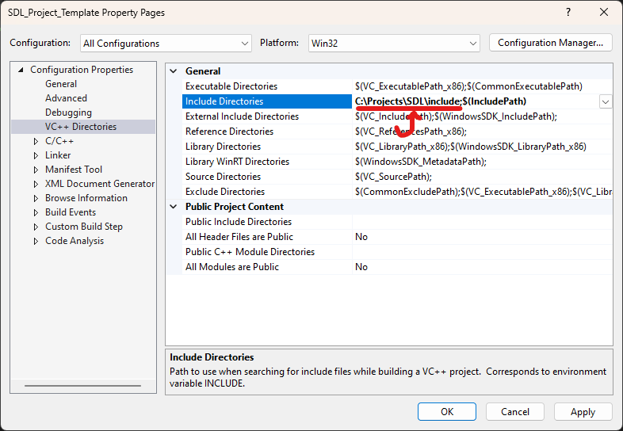
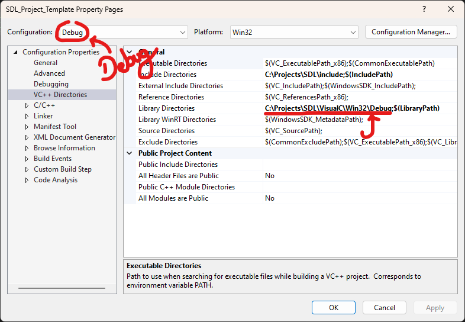
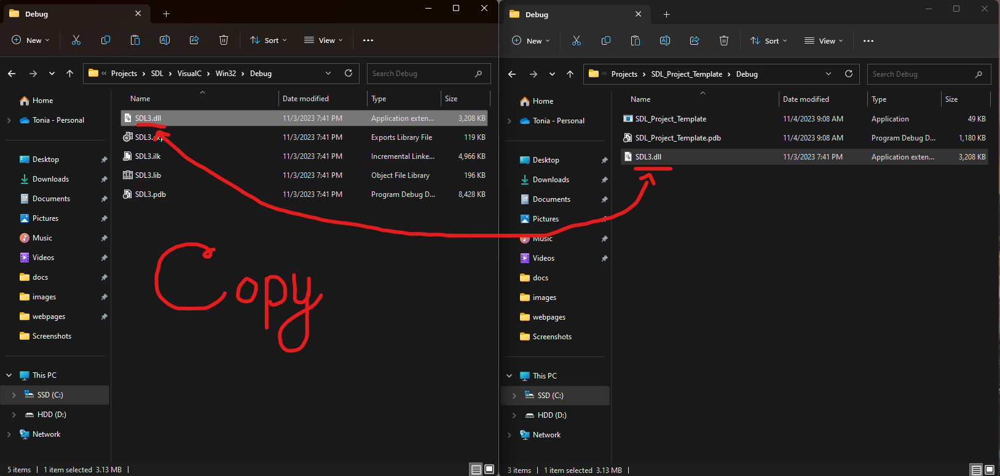

SDL3 or Simple Direct Medialayer, is a cross-platform (awesome!) library! It provides low-level access to a users audio, keyboard, graphics, and much more. Quick shoutout to icculus and slouken, they held it down. This tutorial requires the following software:
We can copy Github repositories to our computer using the git clone command. Navigate to the SDL3 Github Repository to get the repos URL! I love cloning from repos, we get the freshest code and can even help fix problems we find. The image below shows how to find a repos URL with Github.
The next step should go fairly smoothly, navigate to the directory you would like the SDL3 repo to be saved in. For me I'll save it in my "C:\Projects" folder. Next paste the following command into PowerShell or command prompt >> git clone [insert target repos URL]. The repository should then download to your computer. Unless git is missing or not in the PATH environment variables, check the requirements list above for more details.
After cloning the SDL3 Github repositories I highly recommend reading the README-visualc.md file. The next part should go smoothly, if you have any hiccups plese send me an email and we can make this guide better together.
You should have the Debug and Release binaries. My binaries were located in the C:\Projects\SDL\VisualC\Win32\Debug and C:\Projects\SDL\VisualC\Win32\Release directory. The binaries we are intrested in are the SDL3.dll and the SDL3.lib files.
Let's create a Visual Studio project, for my project I am going to create a C++ Console App. The console app will start with some boilerplate code to print "Hello World" to the screen.
We then get the option to name our project, I'm going to name my project "SDL_Project_Template". Your project should look something like this, hopefully this tomb isn't too ancient. Make sure to switch our configuration to target x86 (aka Win32) before we play with the project properties.
In the Project Properties we are going to set some values. Make sure the Platform is set to Win32 and the configuration is set to All Configurations. Navigate to Linker > Input and add SDL3.lib;
After adding SDL3.lib; to the additional dependencies we are going to navigate to the Configuration Properties > VC++ Directories > Include Directories. Let's add the SDL include folder to the Include Directories, my SDL include folder was located at "C:\Projects\SDL\".
Great, lets add our binaries to the Library Directories. Because we have both Debug and Release binaries we are going to change the configuration to Debug first. Add the path to the SDL3 binaries we made to the Configuration Properties > VC++ Directories > Library Directories. My Debug binaries are located in C:\Projects\SDL\VisualC\Win32\Debug directory.
Repeat this for the Release configuration, using the Release binaries instead of the Debug binaries!
The next step might be a little weird but we are going to build the program for both Debug and Release to generate our SDL_Project_Template.exe. This also generates the directory where the programs executable is placed. Make sure you copy the corresponding SDL3.dll to this generated directory (so the Release binary goes in the Release directory, and Debug goes in the Debug directory).
The last step is to confirm that SDL3 is setup and working correctly on your machine. Fortunately for us their is some of test code in README-visualc.md, my test code looks like this:
#include <SDL3/SDL.h>
#include <SDL3/SDL_main.h> // only include this one in the source file with main()!
int main( int argc, char* argv[] )
{
const int WIDTH = 640;
const int HEIGHT = 480;
SDL_Window* window = NULL;
SDL_Renderer* renderer = NULL;
SDL_Init(SDL_INIT_VIDEO);
window = SDL_CreateWindow("Hello SDL", WIDTH, HEIGHT, 0);
renderer = SDL_CreateRenderer(window, NULL, SDL_RENDERER_ACCELERATED | SDL_RENDERER_PRESENTVSYNC);
SDL_DestroyRenderer(renderer);
SDL_DestroyWindow(window);
SDL_Quit();
return 0;
}
If a small window pops up and closes with the title "Hello SDL" everything worked great. I would test this program for both Release and Debug to make sure everything is good!